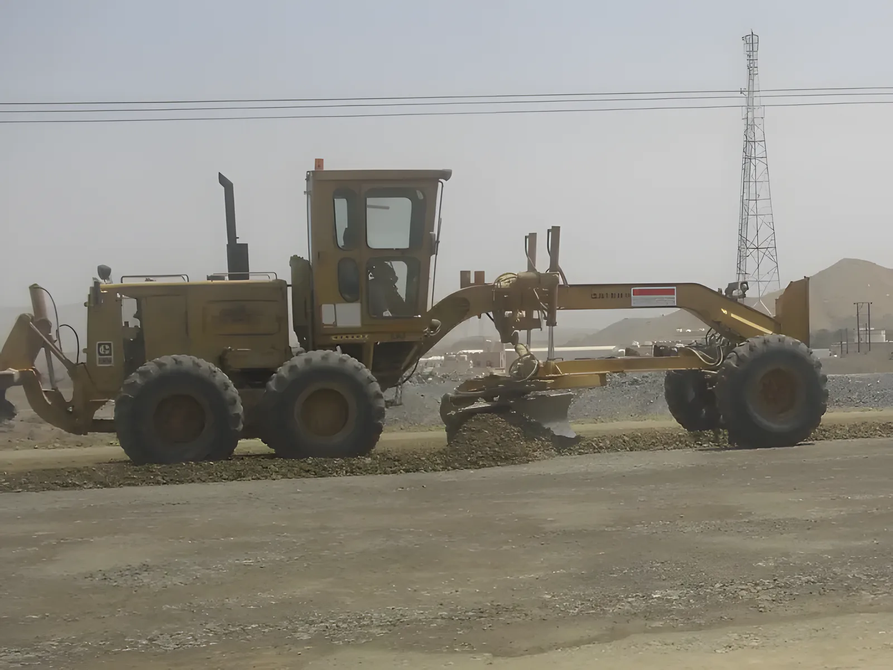

الخدمات
ستة أنشطة أساسية، كلها أعمال ترابية. نفس الشركة ونفس الأسطول ونفس فرق الموقع في كل واحد منها.

الحفريات الكبيرة
نقل التربة بالكميات الكبيرة من أنشطتنا الأساسية منذ زمن. نحفر للسراديب والأساسات ومناطق المحطّات والخنادق، وننقل المخلّفات، ونردم بعد اكتمال المنشأ.
- حفر ونقل المخلّفات والردم
- حفريات كبيرة في الصخر
- حفر الخنادق، كما في مشروع مأخذ ومصبّ مياه البحر
- حفّاراتنا وكسّارات الصخر ومشغّلونا

قطع الجبال والتلال
نقطع المرتفعات ونردم المنخفضات ونسلّم منصّة جاهزة للمقاول التالي. في الأعمال التمهيدية بالجفنين كان العمل قطع جبال وردم من البداية إلى النهاية.
- أعمال قطع الجبال والردم
- أعمال تمهيدية قبل البناء
- تكسير الصخر وتحميله ونقله

طرق الوصول والطرق الممهّدة
الموقع لا يعمل بدون طريق إليه. ننفّذ طرق الوصول والطرق الممهّدة: تُحدَّد بالمساحة، وتُسوّى على المنسوب، وتُدكّ.
- طرق الوصول إلى المواقع الجديدة
- الطرق الممهّدة
- التسوية والدكّ

تجهيز المواقع والأراضي
قبل أي بناء، يجب تنظيف الأرض وتسويتها وإيصالها إلى المنسوب المطلوب. هذا هو العمل في صورة صلالة: تكسير الصخر وتسوية المنطقة للمبنى.
- تنظيف المواقع
- تسوية المساحات
- الحفر للمباني

إعادة فرش الطرق
الطرق غير المرصوفة تتآكل مع الحركة الثقيلة. إعادة الفرش تضع طبقة جديدة من المواد على الطريق، تُسوّى وتُدكّ، فيعود صالحاً للحركة.
- إعادة فرش الطرق
- التسوية والدكّ

أعمال الهدم
نهدم المباني بالمعدّات، ونحمّل الأنقاض، ونترك الأرض نظيفة لما بعدها.
- أعمال الهدم
- تحميل الأنقاض والتخلّص منها
- تنظيف الموقع بعد الهدم
السلامة والجودة
الصحة والسلامة والبيئة
برنامج السلامة والبيئة عندنا يغطّي كل أقسام ومناطق عملنا، وأساسه الوقاية: تقليل وإزالة كل حدث غير مرغوب قد يسبّب خسارة أو يسبّبها فعلاً.
هدفنا أداء في الصحة والسلامة والبيئة يصمد حين يقيسه عملاؤنا ونظراؤنا في القطاع والجهات الحكومية المنظِّمة.
الجودة
يلتزم مدراء الشركة وإدارتها بتشغيل كل جانب من العمل بالمستوى الذي يقدّم لعملائنا أعلى جودة خدمة ممكنة، بأسلوب إدارة يرسّخ ثقافة الجودة في الشركة كلها.
شعارنا: رضا العميل التام، في كل مرة.
اتصل بالمكتب
+968 2439 1512الهاتف
الفاكس
+968 2439 1519
البريد
العنوان البريدي
ص.ب 817، الرمز البريدي 112
مسقط، سلطنة عُمان
لعرض سعر، أرسل لنا بالبريد موقع المشروع ونطاق العمل وأي مخطّطات أو صور عندك.